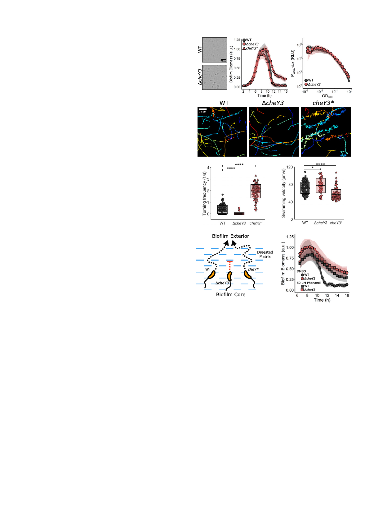

ΔrbmB double-mutant biofilms could be peripherally located
cells that are only loosely associated with the biofilm community.
Extracellular DNA (eDNA) is a component of the V. cholerae
biofilm matrix, and two DNases secreted by V. cholerae, Dns and
Xds, digest eDNA (31). Although we did not identify dns or xds
in our screen, we nonetheless investigated whether they con-
tributed to biofilm dispersal. Neither the Δdns and the Δxds
single mutants nor the Δdns Δxds double mutant displayed a
suggesting that eDNA digestion is not required for dispersal. In a
similar vein, we did not identify genes encoding the eight V.
cholerae extracellular proteases that could degrade matrix pro-
teins. Consistent with this finding, none of the phenotypes of
mutants deleted for each extracellular protease gene exhibited a
dispersal defect, and thus, no single extracellular protease is
possible that proteases contribute to biofilm dispersal by func-
tioning redundantly. Taken together, our results indicate that
two enzymes, LapG and RbmB, are the primary matrix
degrading components that enable biofilm dispersal.
Reorientations in Swimming Direction Are Required for Biofilm
Dispersal. The final category of genes identified in our screen
are involved in cell motility. As noted above, nonmotile mutants
were excluded from our analysis because they are known to be
impaired in surface attachment. Nonetheless, we identified a
mutant containing a transposon insertion in cheY3 as defective
for biofilm dispersal. cheY3 is one of the five V. cholerae cheY
genes specifying chemotaxis RR proteins (32). Notably, cheY3 is
the only V. cholerae cheY homolog required for chemotaxis (32).
The ΔcheY3 mutant exhibited similar peak biofilm timing and
biomass as WT V. cholerae; however, ∼21% of the biomass
remained at 16 h (Fig. 4A and Table 1). Complementation via
introduction of cheY3 at an ectopic locus restored biofilm dis-
lux in the ΔcheY3 mutant was identical to that in the WT, indi-
cating that the dispersal phenotype was not due to elevated
matrix production (Fig. 4B).
The V. cholerae default motor rotation direction is counter-
clockwise (CCW), which fosters smooth, straight swimming (33).
Transition to clockwise (CW) motor rotation causes reor-
ientations in swimming direction (33). Phospho-CheY3 binds to
the flagellar motor switch complex to mediate the change from
CCW to CW rotation. Thus, the ΔcheY3 mutant is non-
chemotactic, and the cells are locked in the CCW straight
swimming mode (Fig. 4C). We reasoned that the ΔcheY3 mutant
dispersal defect could stem from an inability to chemotact or
from an inability to reorient swimming direction. To distinguish
between these possibilities, we examined biofilm dispersal in a V.
cholerae mutant carrying a cheY3 allele, cheY3D16K,Y109W (here-
inafter cheY3*), that locks the motor into CW rotation and so
also disrupts chemotaxis. cheY3* cells undergo frequent reor-
ientations and are unable to swim in smooth, straight runs
(Fig. 4C) (32, 34). The cheY3* strain has WT biofilm dispersal
capability (Fig. 4A). Thus, being chemotactic is not required for
V. cholerae to exit biofilms.
We reasoned that analysis of the unique motility characteris-
tics of our strains could reveal the underlying causes of the
ΔcheY3 biofilm dispersal defect, and thus we measured the
turning frequencies and swimming velocities of the WT, ΔcheY3,
and cheY3* V. cholerae strains. Consistent with previous reports,
these three strains exhibited notable differences; on average, the
WT turned once every 3 s, the ΔcheY3 mutant turned less than
once every 40 s, and the cheY3* strain turned once every 0.5 s
(Fig. 4 C and D) (32, 34). The cheY3* strain displayed slightly
lower average swimming velocity than the WT and ΔcheY3
strains due to its high turning frequency, as turning necessarily
involves a decrease in velocity (Fig. 4E) (35). Together, these
A
B
C
D
E
F
G
Fig. 4. Reorientations in swimming direction are required for V. cholerae
biofilm dispersal. (A) Representative 16 h images and quantitation of biofilm
biomass over time measured by time-lapse microscopy for WT V. cholerae,
the ΔcheY3 mutant, and the cheY3D16K,Y109W (cheY3*) mutant. (B) The
corresponding PvpsL-lux output for WT and the ΔcheY3 strain over the
growth curve. (C) Representative, randomly colored, single-cell locomotion
trajectories for the strains in A. (D) Turning frequencies of the strains in A.
(E) Measured swimming velocities of the strains in A. (F) Proposed model for
the role of motility and reorientation in biofilm dispersal. (G) Quantitation
of biofilm biomass over time for WT and the ΔcheY3 mutant following
treatment with DMSO or the motility inhibitor phenamil supplied at 5 h
postinoculation. For biofilm biomass assays, n = 3 biological replicates and
n = 3 technical replicates, ± SD (shaded). For vpsL-lux measurements, n = 3
biological replicates, ± SD (shaded). For motility measurements, 45 to 125
individual cells of each strain were tracked. In D and E, unpaired t tests were
performed for statistical analysis. *P < 0.05; **P < 0.01; ***P < 0.001;
****P < 0.0001; n.s., P > 0.05.
results suggest that the low turning frequency of the ΔcheY3
mutant is responsible for the biofilm dispersal defect. We pro-
pose that if cells do not frequently change their direction of
motion, they become trapped by the biofilm matrix mesh, which
compromises their ability to escape (Fig. 4F). Indeed, in other
bacteria, straight-swimming mutants are deficient in traversing
fluid-filled porous media compared with WT organisms that can
reorient (36).
Bridges et al.